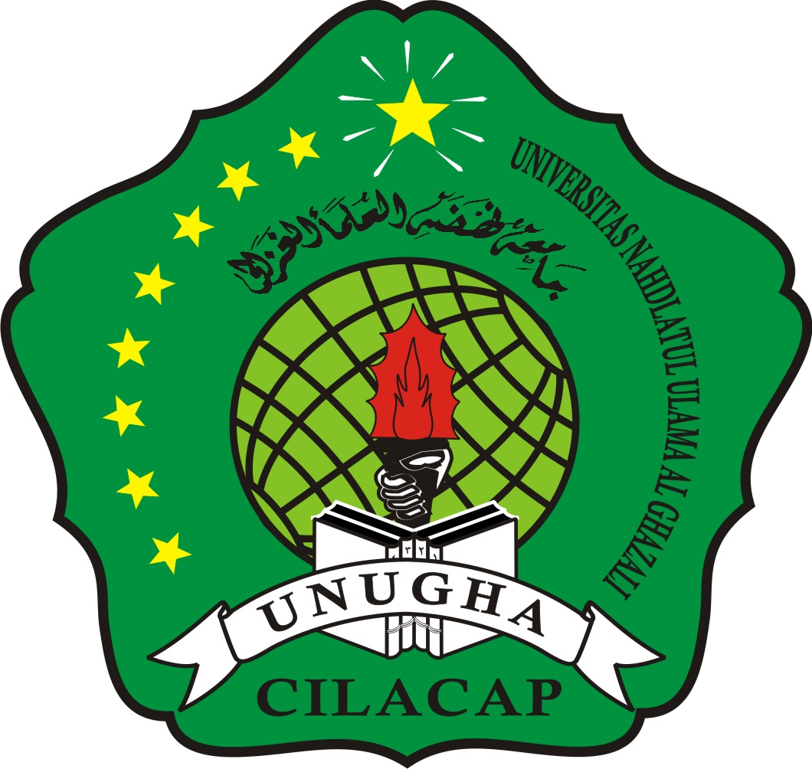

SI-001SISTEM INFORMASI
Portal Informasi Akademik
Struktur informasi untuk pengumuman, kalender, dan tautan layanan kampus.
HTML · CSS · JSONLihat contoh →

Rizqi Ghani AdinataSISTEM INFORMASI · UNUGHA CILACAP✳ PORTOFOLIO AKADEMIK PEMROGRAMAN WEB
Kumpulan latihan, rancangan, dan eksperimen pemrograman web yang disusun sebagai rekam belajar. Setiap teknologi memiliki ruang contoh dan hasil yang dapat ditinjau secara terpisah.
01 — TENTANG PORTOFOLIO
Saya Rizqi Ghani Adinata, mahasiswa Sistem Informasi di UNUGHA Cilacap.
Halaman ini mendokumentasikan perjalanan belajar Pemrograman Web. Rekam proyek berisi contoh kasus dan keluaran demonstrasi; laboratorium menampilkan materi terpisah untuk Laravel, JSON, CSS, Java, serta JavaScript.
Seluruh data contoh bersifat fiktif untuk pembelajaran, tanpa koneksi ke sistem akademik atau data pribadi mahasiswa.
02 — ARSIP PEMBELAJARAN
Katalog 15 contoh kasus demonstrasi, disaring berdasarkan tema.
Struktur informasi untuk pengumuman, kalender, dan tautan layanan kampus.
Antarmuka katalog koleksi dengan hierarki navigasi dan ringkasan buku.
Skema data demonstrasi dengan validasi bidang, label, dan status.
Latihan pengelompokan nilai berdasarkan rentang dan status kelulusan.
Rancangan dashboard untuk melihat ringkasan aktivitas dan indikator utama.
Model pencatatan aset dengan identitas barang, kategori, dan kondisi.
Contoh pemetaan respons JSON ke daftar antarmuka yang mudah ditelusuri.
Aturan untuk memeriksa masukan wajib dan menampilkan umpan balik.
Layout editorial formal dengan fokus pada keterbacaan dan navigasi responsif.
Alur pencatatan pinjam-kembali sebagai studi pemodelan proses.
Data jadwal terstruktur dengan kode, mata kuliah, hari, dan waktu.
Latihan mengurutkan katalog dan mencari berdasarkan kata kunci.
Skema katalog organisasi, bidang kegiatan, serta kanal informasi.
Galeri karya dengan label teknologi dan deskripsi ringkas.
Rancangan sumber data REST sederhana beserta transformasi antarmuka.
03 — LABORATORIUM KODE
Pilih bahasa untuk membuka berkas sumber dan meninjau keluarannya.
MODUL 01 · PHP FRAMEWORK
Contoh controller Laravel dengan validasi dan resource response.
Memuat contoh Laravel…Cuplikan sumber Laravel; eksekusi route/controller memerlukan PHP dan Laravel.
{ "data": [{ "id": 1, "judul": "Portal Informasi Akademik", "status": "selesai" }] }MODUL 02 · FORMAT DATA
15 rekam demonstrasi dengan ID, kategori, ringkasan, dan tumpukan teknologi.
Memuat contoh JSON…MODUL 03 · PRESENTASI
Token visual dan kartu formal responsif untuk memisahkan struktur dan tampilan.
Memuat contoh CSS…Ringkasan informasi untuk komunitas kampus.
SISTEM INFORMASIMODUL 04 · PEMROGRAMAN
Kelas bertipe untuk merepresentasikan dan menyaring rekam proyek.
Memuat contoh Java…Katalog Proyek Pemrograman Web
Jumlah contoh: 3
Urutan: SI-001 → UI-002 → API-003
Untuk menjalankan contoh, kompilasi dengan Java Development Kit (JDK).
MODUL 05 · INTERAKSI WEB
Filter katalog contoh melalui kata kunci tanpa memuat ulang halaman.
Memuat contoh JavaScript…Ketik kata kunci lalu tekan Cari.
Catatan runtime: Situs ini statis di Cloudflare Pages. Cuplikan Laravel/PHP dan Java dapat dibaca/diunduh; eksekusi membutuhkan runtime PHP/Laravel atau JDK terpisah.
04 — PENDEKATAN BELAJAR
Setiap rekam mengikuti urutan kerja yang sederhana dan dapat ditinjau kembali.
Menetapkan konteks dan tujuan setiap contoh.
Memilih struktur data, alur, dan teknologi yang sesuai.
Meninjau interaksi dan memastikan hasil sesuai skenario.
Menyimpan catatan agar mudah dikembangkan.
DISKUSI & KOLABORASI
Terbuka untuk bertukar gagasan seputar sistem informasi dan pengembangan web.